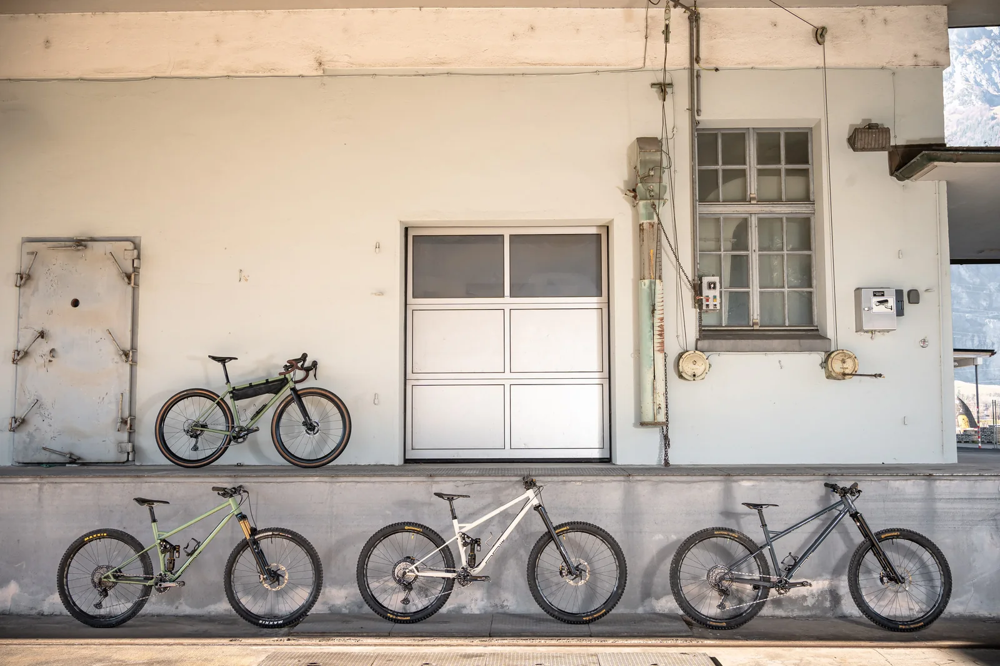
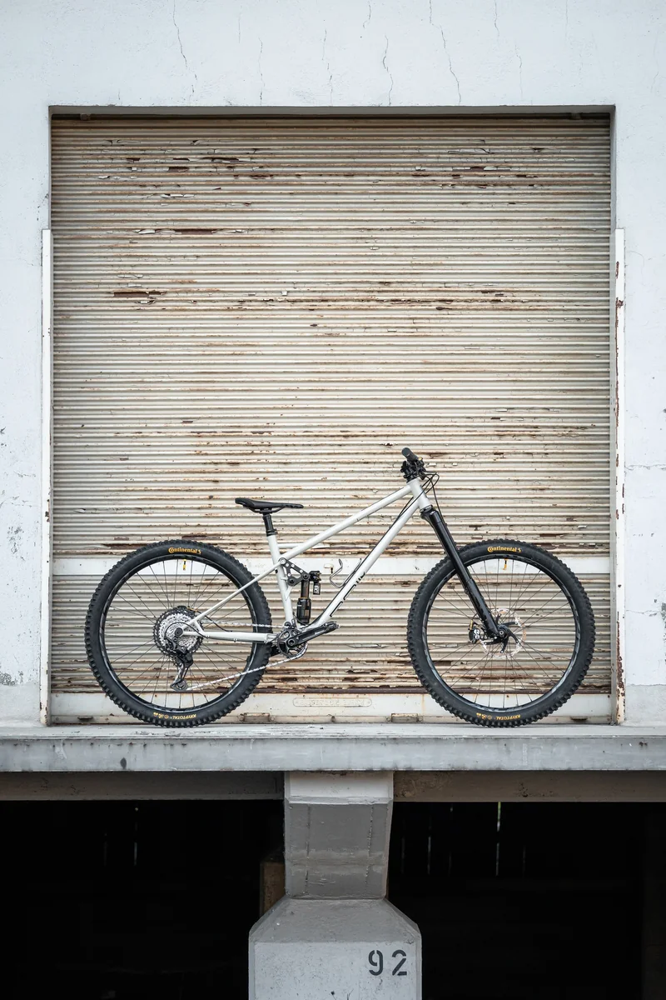
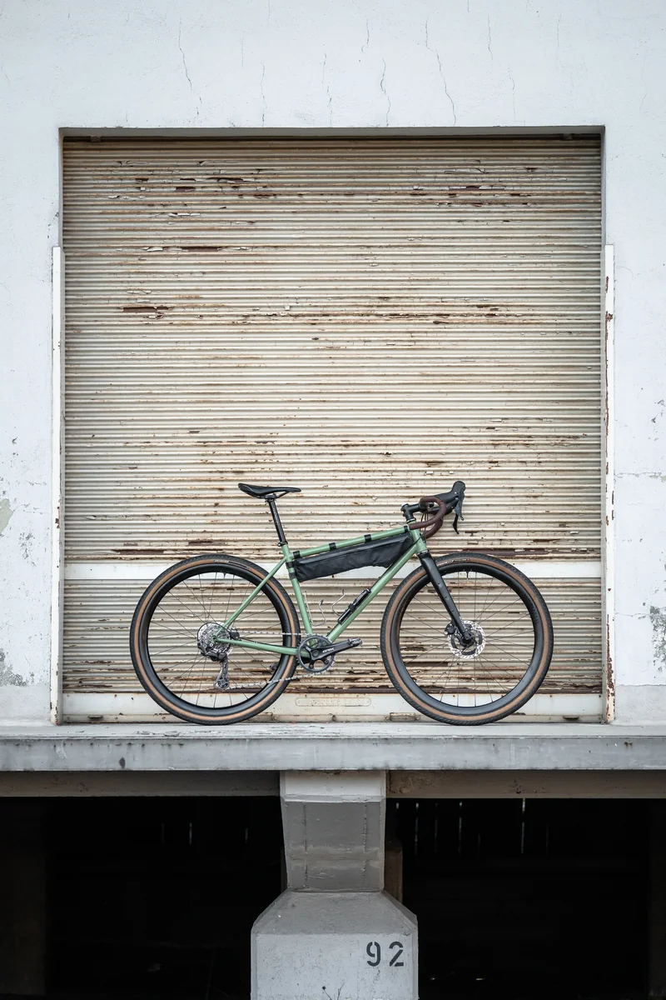
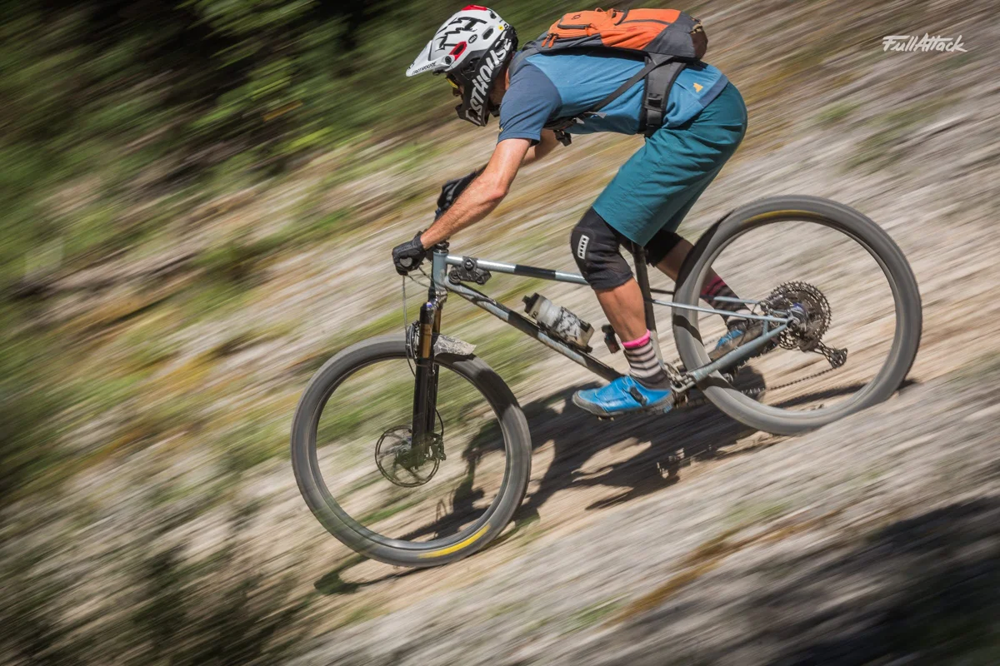
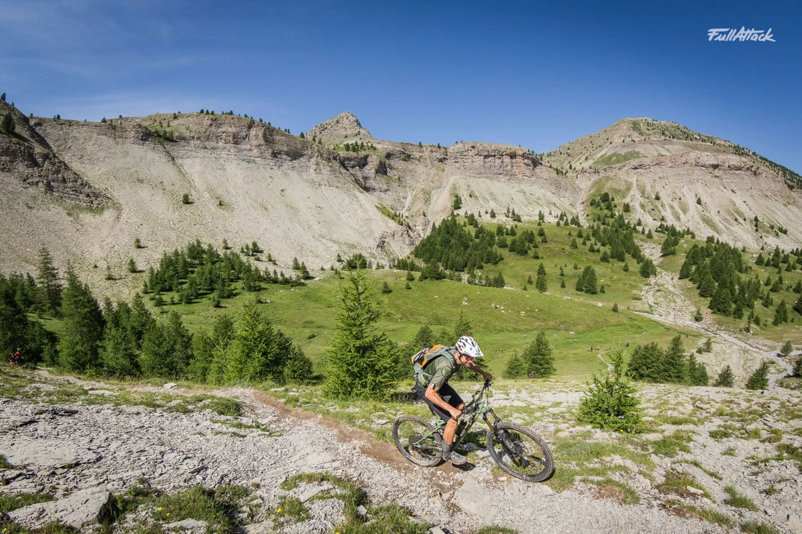
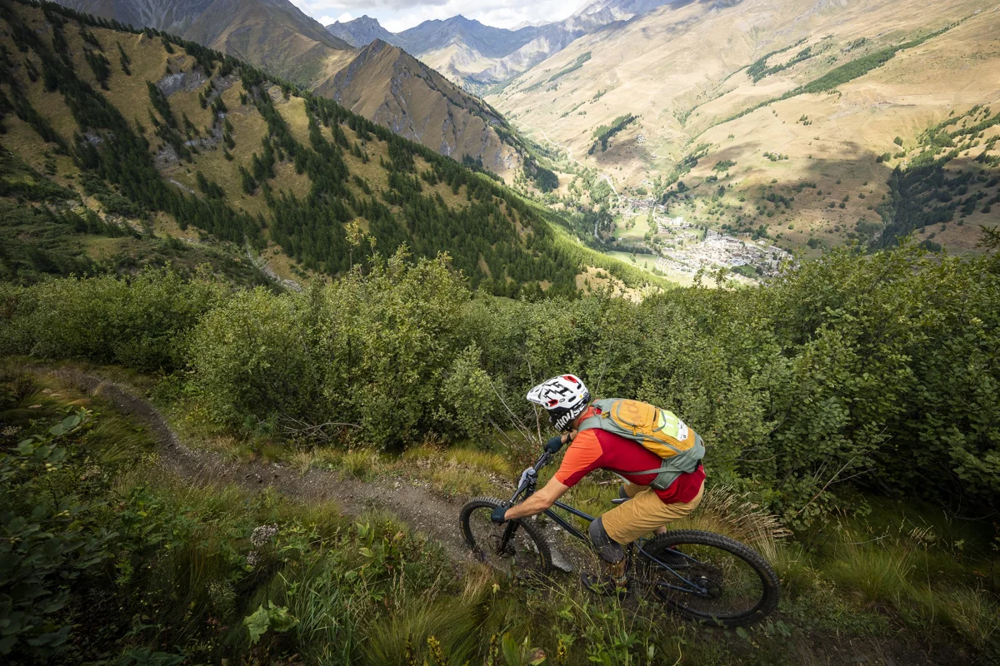
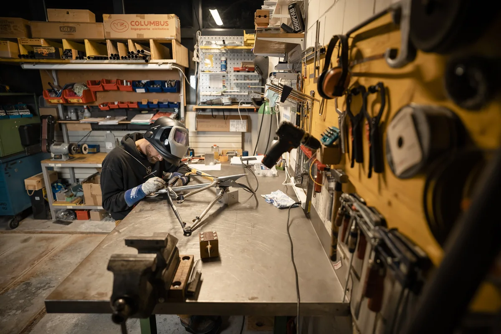

Enduro Hardtail

Featured models
From gravel to enduro. Four models with local roots.
Enduro Hardtail

Trail / Enduro

Down Country / Trail

Gravel
RAIL on the trail.




Workshop
From a frame on the workbench to a finished bicycle: a glimpse into the place where RAIL takes shape.
Explore the workshop
Let’s talk about your bike.